Fun with Filters
and Frequencies
Exploring how local filters change edges, detail and the way two photographs fit together.
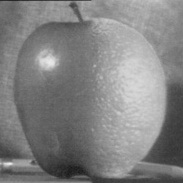
This report follows the required CS180 experiments: convolution from scratch, finite differences, Gaussian derivatives, unsharp masking, three hybrid images, and three multiresolution blends. Each section includes the chosen parameters, computed results and observations.
Click any linked figure to inspect it at full size. Grayscale images use floating-point intensities in [0, 1]. Signed filter responses are preserved during computation and rescaled only for display, as stated in each caption.
Part 1.1
Convolution from scratch
I converted my portrait to grayscale and resized it to 320 × 427 pixels. Each value is a float in [0, 1]. The first implementation loops over the output pixels and every kernel entry. The second keeps the two pixel loops and uses a NumPy multiply and sum for each window. Both flip the kernel horizontally and vertically, so they compute convolution rather than correlation.
Both functions return an image of the original size. For a kernel dimension k, I add ⌊k/2⌋ zeros before the image and ⌊(k−1)/2⌋ after it. This also handles even-sized kernels without a one-pixel shift and matches SciPy's mode="same". Zero padding also explains the dark border of the blurred portrait and the strong responses where a derivative meets the image boundary.
import numpy as np
def _same_inputs(image, kernel):
"""Zero-pad for SciPy-compatible 'same', including even-size kernels."""
image = np.asarray(image, dtype=np.float64)
kernel = np.asarray(kernel, dtype=np.float64)
if image.ndim != 2 or kernel.ndim != 2 or not image.size or not kernel.size:
raise ValueError("image and kernel must be nonempty 2D arrays")
kh, kw = kernel.shape
padding = ((kh // 2, (kh - 1) // 2),
(kw // 2, (kw - 1) // 2))
padded = np.pad(image, padding, mode="constant", constant_values=0)
flipped = kernel[::-1, ::-1]
output = np.zeros(image.shape, dtype=np.float64)
return padded, flipped, output
def convolve_four_loops(image, kernel):
"""True 2D convolution, using four explicit loops and zero same padding."""
padded, flipped, output = _same_inputs(image, kernel)
height, width = output.shape
kh, kw = flipped.shape
for y in range(height):
for x in range(width):
for ky in range(kh):
for kx in range(kw):
output[y, x] += padded[y + ky, x + kx] * flipped[ky, kx]
return output
def convolve_two_loops(image, kernel):
"""True 2D convolution, reducing each window with NumPy."""
padded, flipped, output = _same_inputs(image, kernel)
height, width = output.shape
kh, kw = flipped.shape
for y in range(height):
for x in range(width):
window = padded[y:y + kh, x:x + kw]
output[y, x] = np.sum(window * flipped)
return outputThe box filter averages 81 neighboring pixels. I used the supplied three-sample operators, [1, 0, −1] and its transpose, without dividing by two. They give signed responses to changes across columns and rows.
BOX9 = np.ones((9, 9), dtype=np.float64) / 81.0
DX = np.array([[1.0, 0.0, -1.0]])
DY = DX.T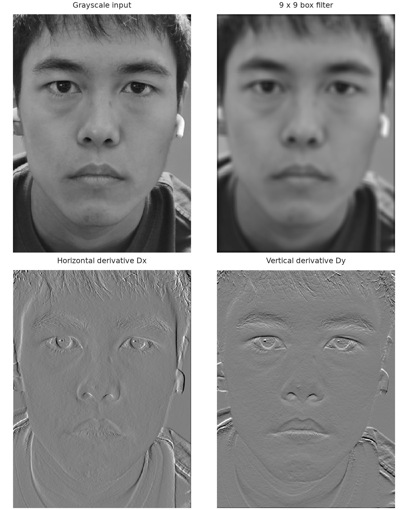
Agreement and runtime
I compared both functions with scipy.signal.convolve2d(image, kernel, mode="same", boundary="fill", fillvalue=0). The table reports the median of three measured runs, including padding and allocation. Timings depend on the machine and background work.
| Filter | Four loops (ms) | Two loops (ms) | SciPy (ms) | Largest absolute error |
|---|---|---|---|---|
| 9 x 9 box | 7175.70 | 1286.73 | 27.28 | 1.11e-15 |
| Dx: 1 x 3 | 327.60 | 1333.99 | 2.59 | 0.00e+00 |
| Dy: 3 x 1 | 312.46 | 1042.48 | 3.44 | 0.00e+00 |
The box filter benefits from moving its 81-entry reduction into NumPy. For the tiny difference filters, creating and reducing a NumPy window can cost more than the few scalar multiplications in the four-loop version. SciPy avoids the Python loop at every image pixel and is faster for all three filters. Independent checks also passed for 18 image/kernel combinations, including asymmetric, even-sized and larger-than-image kernels; the largest absolute error was 7.11e-15.
Part 1.2
Finite differences and edges
The supplied cameraman PNG has a narrow white export frame. I removed that frame (content bounds: x = 1:535, y = 7:541), leaving all 534 × 534 photograph pixels. I computed Ix = I * Dx and Iy = I * Dy with the same zero-padding convention. The gradient magnitude is sqrt(Ix**2 + Iy**2). It combines changes in both directions without cancelling negative derivatives.
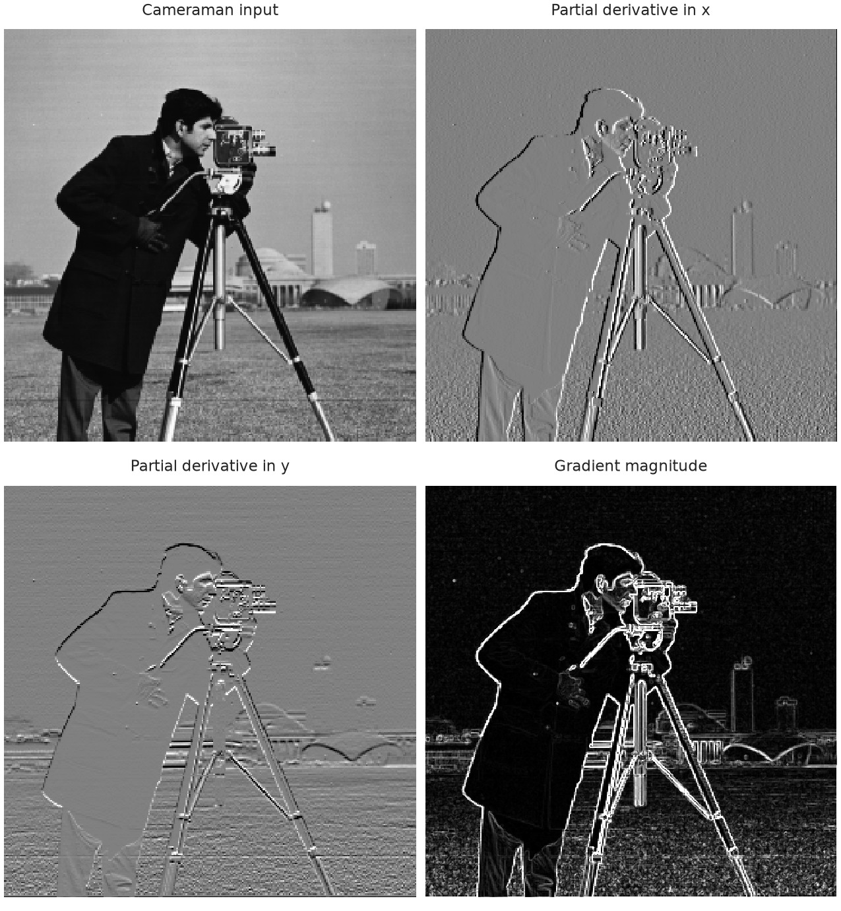
I tried thresholds 0.12, 0.20 and 0.30 on the magnitude. At 0.12, fine ground texture creates many isolated responses. At 0.30, more of the weaker camera and tripod detail is lost. I selected 0.20 as a compromise: the main silhouette and tripod remain visible, although textured regions still contain clutter. A single magnitude threshold does not separate every true boundary from texture.
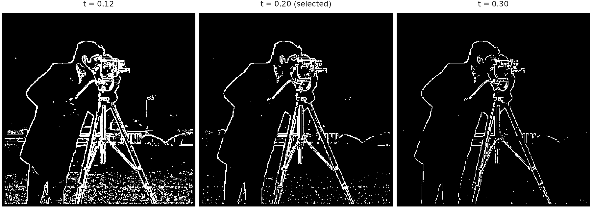
Part 1.3
Smoothing before differentiation
I built a 13 × 13 Gaussian with σ = 2 pixels using g = cv2.getGaussianKernel(13, 2.0, cv2.CV_64F) and G = g @ g.T. Its weights sum to one. After smoothing, the ground texture is much weaker and the larger outlines are more continuous, but fine detail is reduced and edges spread across more pixels.
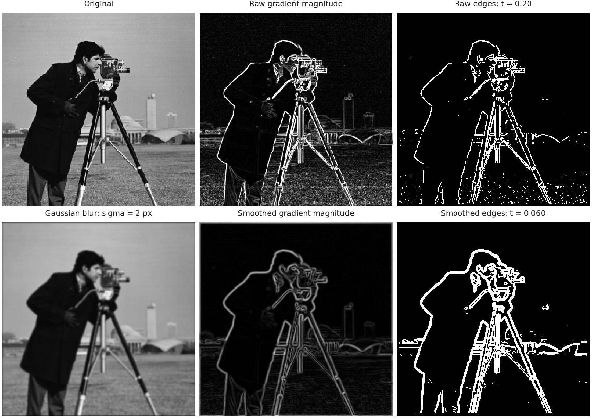
Smoothing reduces the peak gradient, so I tested a separate set of thresholds: 0.035, 0.060 and 0.090. I selected 0.060. The lower value retains more weak texture; the higher value removes more small structures and weak background boundaries. The two selected thresholds are qualitative choices, not evidence that one method has better accuracy against a labeled ground truth.
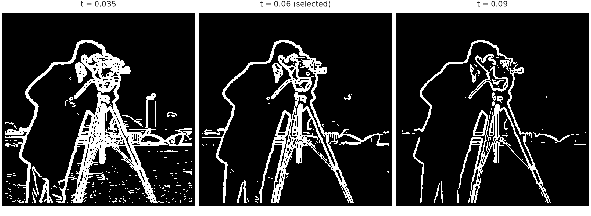
Derivative of Gaussian
Convolution is associative: (I * G) * Dx = I * (G * Dx), and likewise for Dy. I used full convolution to form G * Dx and G * Dy. Their sizes are 13 × 15 and 15 × 13 because the supplied finite difference filter has three samples. Each has a positive and a negative lobe.
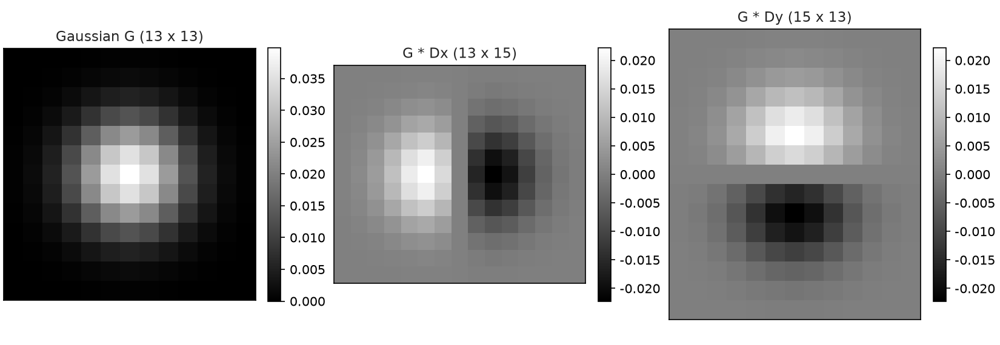
For a fair numerical check, I retained the full blurred image, applied the difference filter, and cropped only at the end. The single DoG convolution uses the same final crop. If I crop the blur to the input size first, nonzero values in its exterior halo are discarded. That produces a maximum boundary discrepancy of 0.369, even though the interior agrees to roundoff.
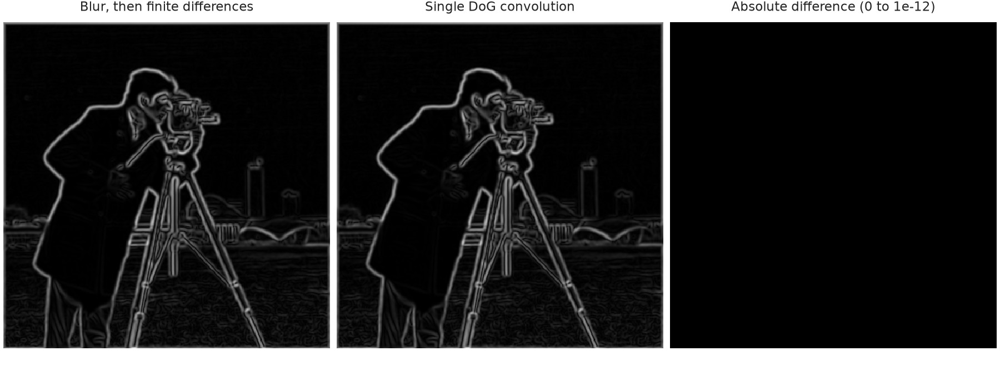
| Comparison | Largest absolute difference |
|---|---|
| Horizontal derivative | 1.01e-15 |
| Vertical derivative | 9.76e-16 |
| Gradient magnitude | 9.67e-16 |
The two methods agree to floating-point precision over the whole image. At the selected threshold, their binary edge maps disagree at 0 pixels. The DoG method reproduces the two-stage result with one image convolution per derivative direction.
Part 2.1
Sharpening by adding detail
A Gaussian blur keeps broad changes in intensity and suppresses fine detail. Subtracting it from the image isolates a signed high-frequency residual. Adding that residual back with weight α strengthens edges:
B = Gσ ∗ I · H = I − B · S = I + αH
Combining the terms gives a single unsharp mask filter, K = (1 + α)δ − αGσ, so S = K ∗ I. The Gaussian is truncated at three standard deviations and normalised to sum to one. Reflect padding avoids adding a black frame. RGB channels are filtered independently; clipping to [0, 1] happens only after filtering.
I checked the single convolution against I + α(I − G ∗ I) for both photographs and four values of α. The largest absolute difference before clipping was 3.77e-15. This is floating-point rounding, not a visible image difference.
Taj Mahal
The Taj Mahal example uses σ = 1.2 pixels at its original 300 × 300 resolution. At α = 1, the facade and dome gain definition. Increasing α to 4 produces bright and dark halos around the roofline and exaggerates existing texture. Sharper edges do not necessarily mean a more faithful image.
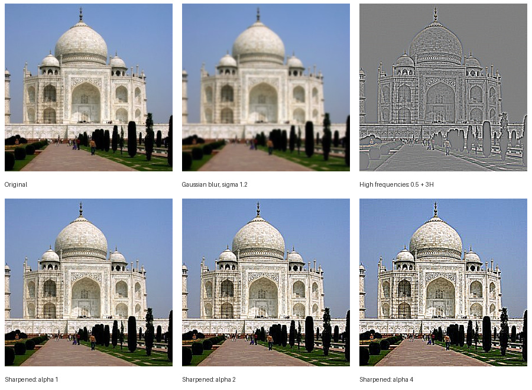
A building photographed for Project 0
The second image is resized to 540 × 720 and uses σ = 1.5. The window frames and foliage make the effect easy to compare. Moderate sharpening clarifies those boundaries. The strongest setting makes the high-contrast roof edge look outlined. In both panels, the residual is displayed as 0.5 + 3H, so neutral gray represents zero. This display scaling is not used in the sharpening calculation.
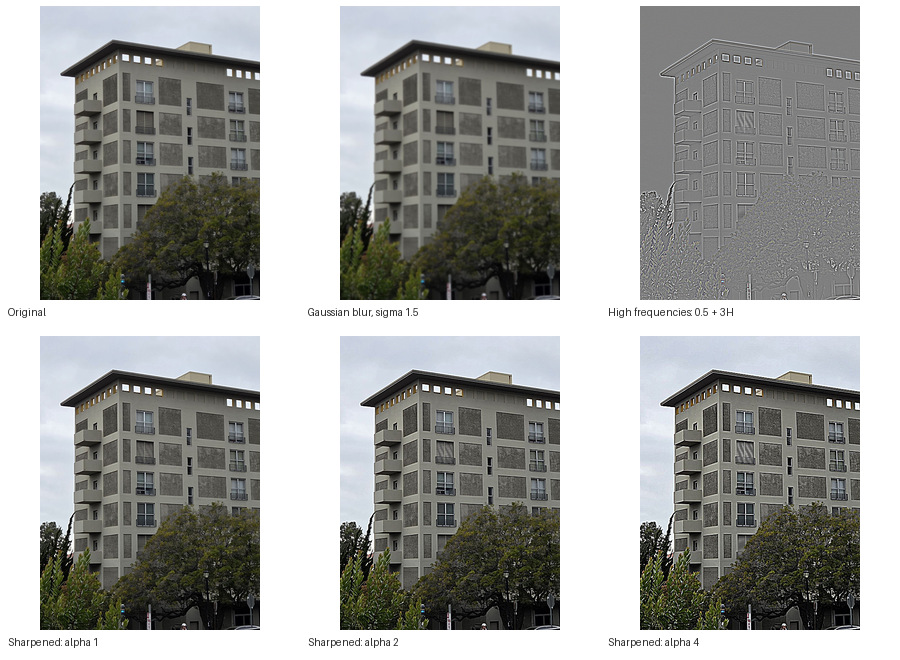
Can sharpening reverse a blur?
I used the resized building image as the reference, blurred it with σ = 2, then applied an unsharp mask with σ = 2 and α = 1.5. All error measurements compare floating-point RGB images on the same pixel grid, before JPEG export.
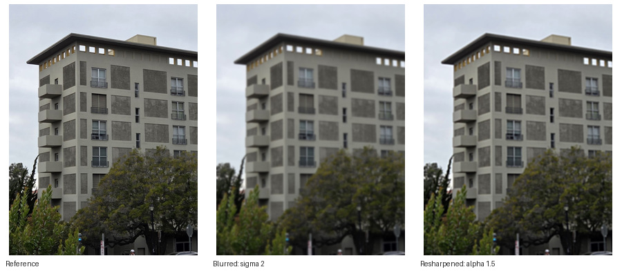
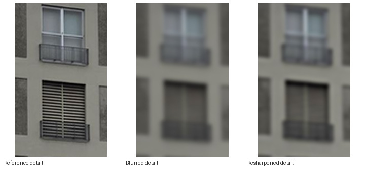
| Compared with reference | RMSE | PSNR |
|---|---|---|
| Blurred | 0.04678 | 26.60 dB |
| Resharpened | 0.03956 | 28.06 dB |
Resharpening reduces the error and restores some edge contrast, but the narrow window bars and wall texture remain less distinct than the reference. Gaussian blur attenuates high frequencies. An unsharp mask boosts what remains; it does not invert that attenuation or recover every lost detail.
Part 2.2
One image, two viewing distances
A hybrid adds the low frequencies of one image to the high frequencies of another. Nearby, fine detail is visible. From farther away, or in a reduced view, that detail becomes harder to resolve and the broad structure takes over. All three examples below are grayscale, with intensity 0.299R + 0.587G + 0.114B.
L = GσL ∗ A · H = B − GσH ∗ B · hybrid = L + βH
I align each pair by marking the two eye centres. A two-point similarity transform places them at the same horizontal positions, correcting translation, uniform scale and rotation. It does not warp individual facial features. Bilinear interpolation resamples the images, and a common valid rectangle removes empty transformed borders. Landmarks, matrices, crops and filter settings are recorded by the code.
Detailed example: my portrait and the Emir
This combines my portrait from Project 0 with the reconstructed Emir photograph from Project 1. The Emir supplies the smooth face and beard; my portrait supplies the eyes, skin texture and other fine features. The source portraits differ strongly in crop and resolution, so alignment is essential.
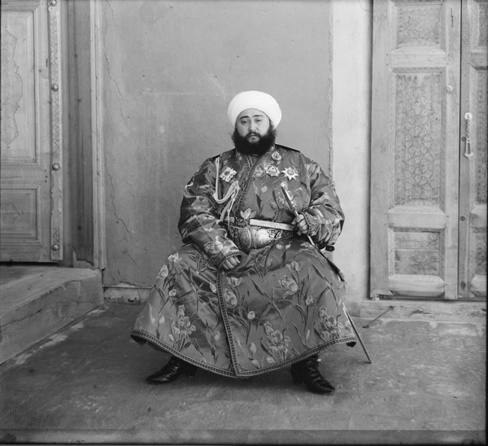
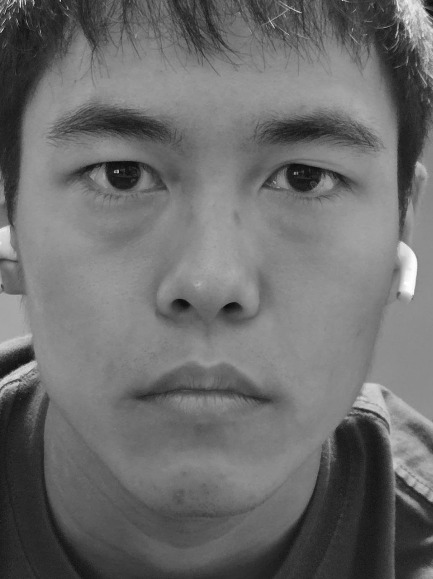
Eye centres in source pixels (x, y): Emir (600, 298), (635, 297); my portrait (274, 390), (672, 390). Both are mapped to (160, 205), (340, 205) on a 500 × 620 canvas before the common crop. The enlarged Emir has less fine detail, which is acceptable for the low-frequency source.
Choosing the cutoffs
The three trials keep alignment and β = 1.15 fixed. A Gaussian has a gradual roll-off, not a hard cutoff. Larger σL removes more detail from the low-pass image; larger σH subtracts a smoother image and retains more middle frequencies in the high-pass component.

{kind=link}
{kind=link}
{kind=link}
{kind=link}
{kind=link}
{kind=link}
I selected σL = 12 and σH = 5. The small-sigma trial leaves more of the Emir’s eye detail in competition with my portrait. The largest pair lets broader features from my portrait survive in the residual, which weakens the separation between viewing scales. The middle pair gives a clearer compromise, although the two head shapes do not agree perfectly.
For a continuous Gaussian, its half-amplitude frequency is √ln(2)/(√2πσ). These choices correspond to about 0.0156 and 0.0375 cycles per pixel. The finite sampled filters approximate those responses.
{kind=link}
{kind=link}
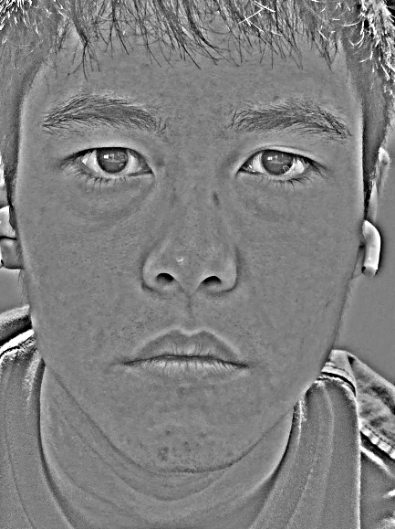
Frequency analysis
Each spectrum below is log(1 + |fftshift(fft2(I))|). The origin is at the centre. All five use the same display range and the same aligned dimensions. The high-pass spectrum uses the signed residual, not its gray-offset visualisation; the hybrid spectrum is measured before output clipping.
{kind=link}
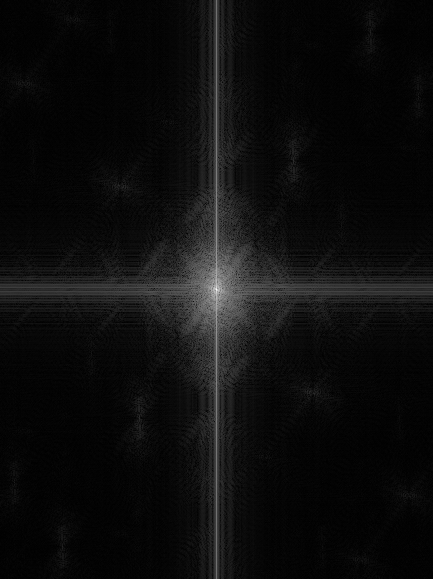
{kind=link}
{kind=link}
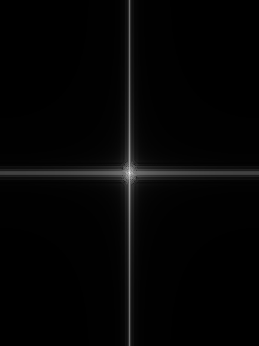
{kind=link}
{kind=link}
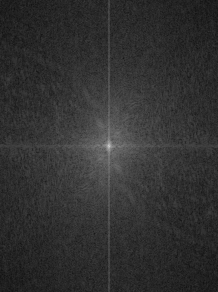
The low-pass result concentrates energy around the centre. Subtraction suppresses the high-pass component’s central frequencies while retaining detail farther out. The hybrid contains both ranges. Bright horizontal and vertical lines can also come from the image boundaries, since the Fourier transform treats each image as periodic.
{kind=link}
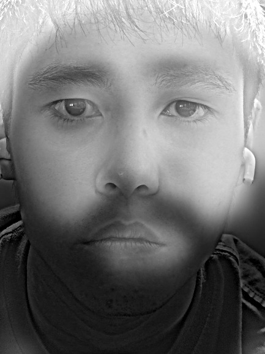
{kind=link}
At the larger size, the aligned eye detail from my portrait is visible. In the small view, the Emir’s beard and broad face shape become more prominent. The beard remains present even nearby, so this is an incomplete perceptual switch rather than two perfectly isolated faces.
Derek and Nutmeg
Low-pass: Derek, σL = 10. High-pass: Nutmeg, σH = 3. Residual weight β = 0.8.
{kind=link}
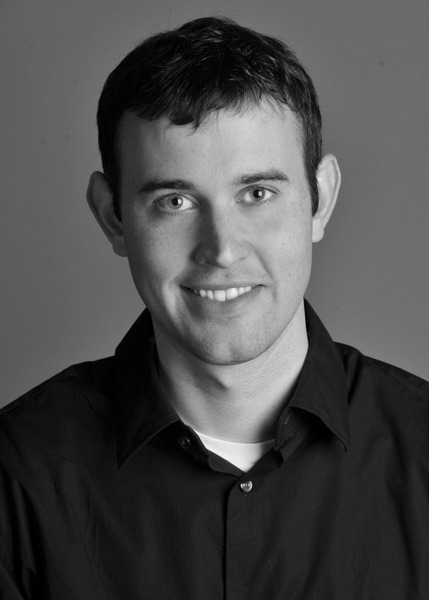
{kind=link}
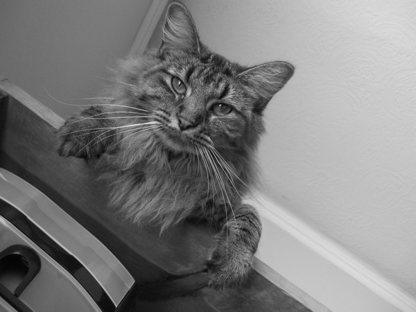
{kind=link}
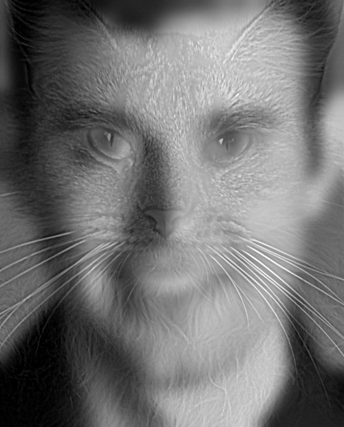
{kind=link}
Nutmeg’s fur and whiskers remain visible in the large image. At 48 pixels wide, most of that texture disappears and Derek’s head and smile become easier to recognise. A 96-pixel preview still retained obvious cat features, so it was not a convincing distant view. Reducing the high-pass σ from 6 to 3 and its weight from 1.15 to 0.8 also helped. The full-size result still mixes both faces; the cat’s muzzle does not align with Derek’s mouth.
Two camera distances
Low-pass: Close viewpoint, σL = 10. High-pass: Farther viewpoint, σH = 4. Residual weight β = 1.1.
{kind=link}
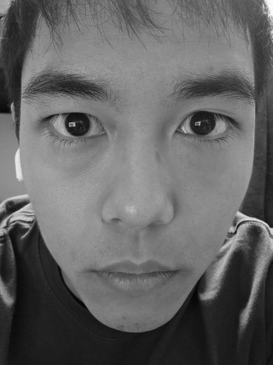

{kind=link}
{kind=link}
Both inputs are my own photographs from Project 0, taken at different camera distances. The close viewpoint supplies the broad proportions, while the farther viewpoint supplies fine detail. The effect is subtler because identity and expression barely change. Eye alignment cannot remove perspective differences in the nose and mouth, and those regions show some double structure. This pair is less successful than Derek and Nutmeg.
The practical lesson is that selecting and aligning compatible structures matters as much as choosing σ. Filtering can separate spatial scales, but it cannot make mismatched geometry disappear.
Gaussian and Laplacian stacks
A stack keeps every level at the original resolution. Here, both fruit images are converted to grayscale and kept at 300 by 300 pixels. The Gaussian stack uses seven levels with target standard deviations of 0, 1, 2, 4, 8, 16 and 32 pixels. Level zero is the original image.
Each new level smooths the previous one. Its incremental standard deviation is sqrt(sigma_next squared minus sigma_previous squared), so the variances add to the intended total. Each one-dimensional Gaussian is constructed with cv2.getGaussianKernel, truncated at three standard deviations and applied along both axes with reflected boundaries. There is no downsampling or built-in pyramid function.
G[k+1] = Gaussian(sqrt(sigma[k+1]^2 - sigma[k]^2)) * G[k]
L[k] = G[k] - G[k+1], for k = 0,...,5
L[6] = G[6]; I = sum(L[k])
The Laplacian differences isolate detail at different scales. The final Gaussian level is retained as the low-frequency residual. Without it, summing the differences would omit the broad brightness structure.
Apple Gaussian stack
{kind=link}
{kind=link}
{kind=link}
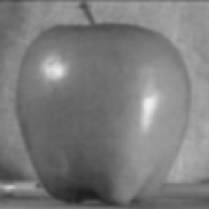
{kind=link}
{kind=link}
{kind=link}

Orange Gaussian stack
{kind=link}
{kind=link}
{kind=link}
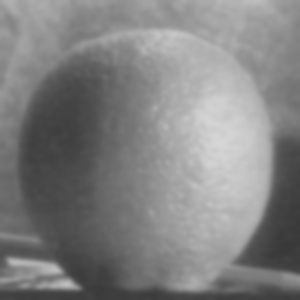
{kind=link}
{kind=link}
{kind=link}

Apple Laplacian stack
{kind=link}
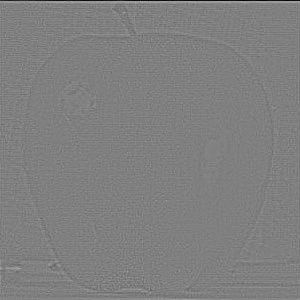
{kind=link}
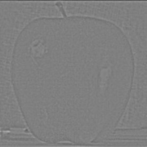
{kind=link}
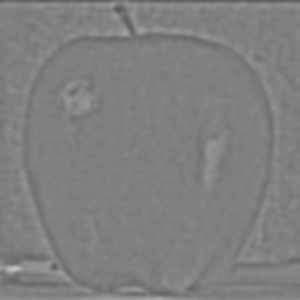
{kind=link}
{kind=link}
{kind=link}
{kind=link}
The six signed detail bands share a symmetric display range whose limits are the largest absolute coefficient across those six bands. Zero is middle gray. The residual uses the ordinary [0, 1] intensity scale.
Orange Laplacian stack
{kind=link}
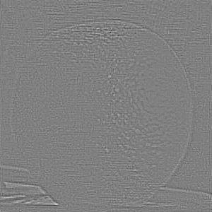
{kind=link}
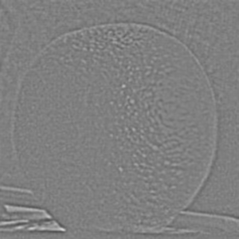
{kind=link}
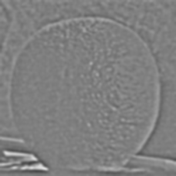
{kind=link}
{kind=link}
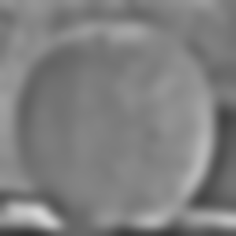
{kind=link}
{kind=link}
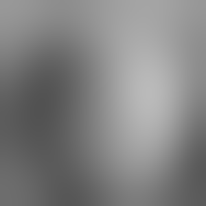
The six signed detail bands share a symmetric display range whose limits are the largest absolute coefficient across those six bands. Zero is middle gray. The residual uses the ordinary [0, 1] intensity scale.
Recreating Figure 3.42, panels (a) through (l)
The first three rows show levels 0, 2 and 4. Each row contains the mask-weighted apple band, the complementary orange band, and their sum. The bottom row sums all seven levels, including the residual, to recover the two contributions and the final oraple. This is the grayscale version of the supplied figure. Detail rows use a symmetric display scale shared across each row, with zero at middle gray; the final row uses the ordinary [0, 1] intensity scale.
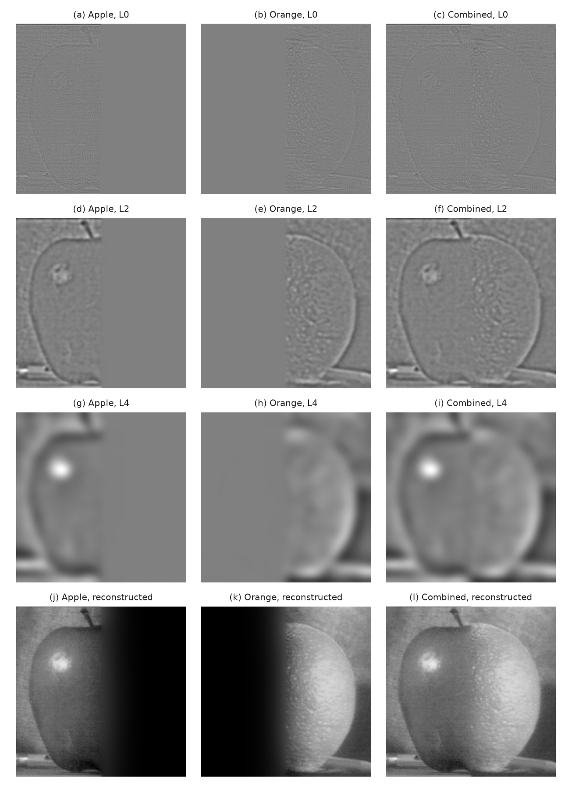
Summing the unmasked Laplacian stack reconstructs each tested input with a maximum absolute error of 1.11e-16. The calculation retains signed floating-point bands; clipping is used only when saving final display images.
Blending at multiple scales
A hard mask selects the left fruit abruptly. Blurring one mask hides the brightness step but also mixes fine edges across a wide strip. The multiresolution version uses a different transition width at each scale: narrow for fine detail and wide for broad shading.
Result = sum(C[k])
The mask equals one where image A is selected and zero where image B is selected. The same seven-level schedule is used for both images and the mask. The mask stack is computed explicitly, and reconstruction is a direct sum because stack levels share one resolution.
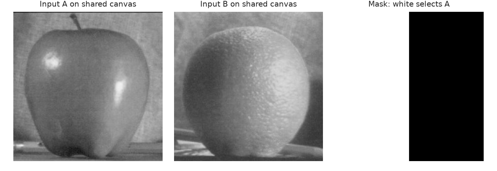
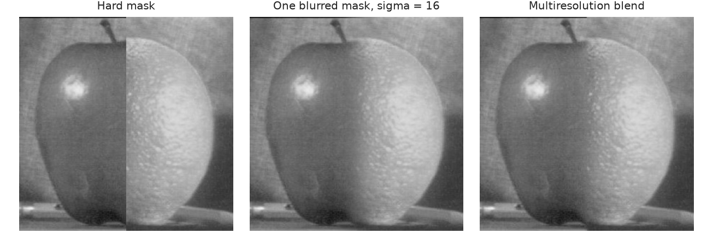
The stack blend reduces the central brightness discontinuity while preserving the apple skin and orange texture. Their outlines do not match perfectly, so the joined silhouette still reveals that these are different fruit photographs. Blending changes the transition; it does not align their geometry.
Custom blend 1: swapping the eye regions
This example uses my two Project 0 portraits. I align their eye centres with a similarity transform, then use a pair of elliptical regions to transfer the close portrait's eyes into the distant portrait. This mask has two disconnected curved regions rather than a straight seam.
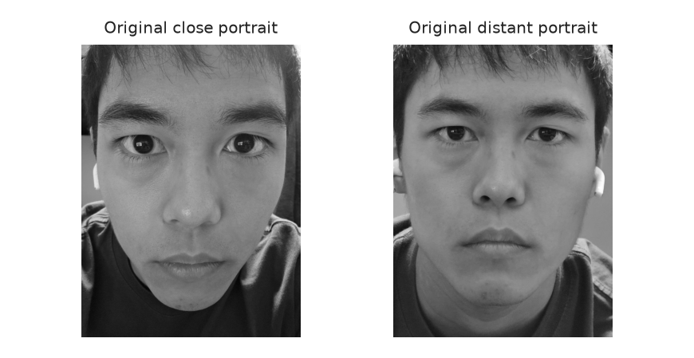
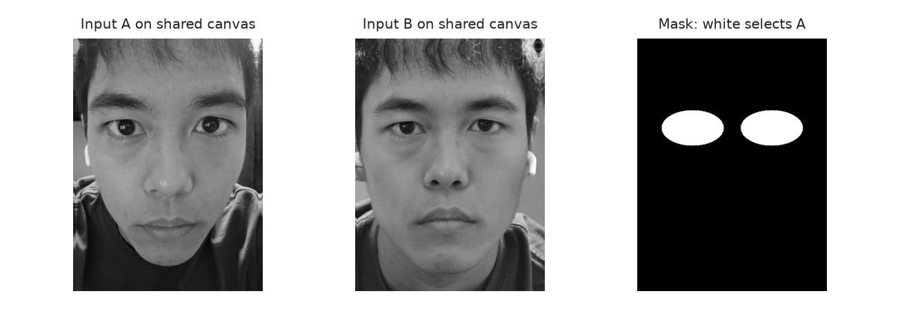
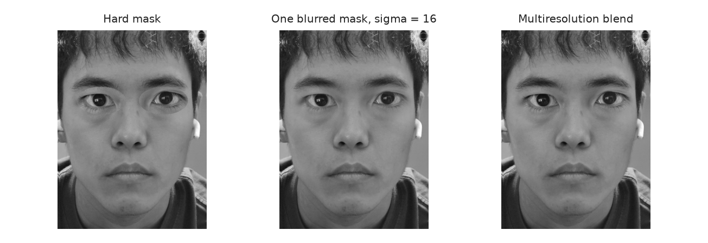
Matching the eye centres removes most positional disagreement. The larger eye appearance from the close viewpoint remains, while the lower face comes from the distant view. The multiresolution transition avoids the hard oval brightness boundary. Some eyelid and eyebrow differences remain because a similarity transform cannot remove perspective changes or small changes of expression.
Custom blend 2: a monument beside the lake
I place the supplied Taj Mahal photograph on the shore of the Saimaa Lake reconstruction from Project 1. A hand-traced polygon follows the central monument, including its dome and side towers. The source is scaled by 0.78 and translated by (351, 69) on a 600 by 510 canvas. The lake is cropped to remove its surviving scan border. The prepared foreground extends the source into a 20-pixel ring around the polygon so smoothing does not sample a zero-filled rectangle.
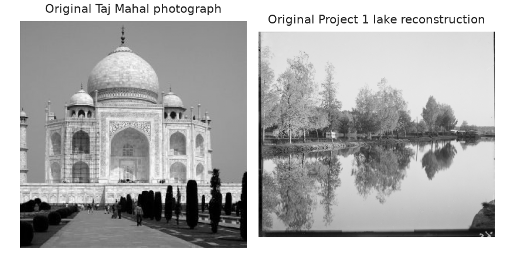
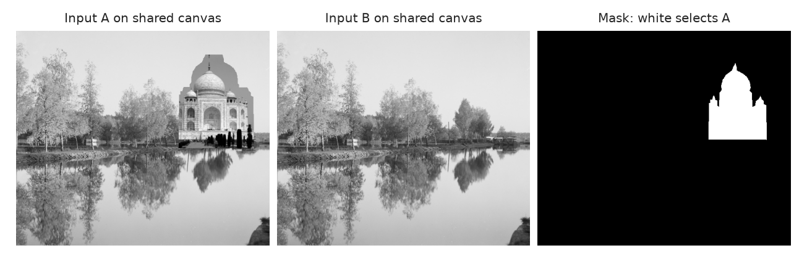
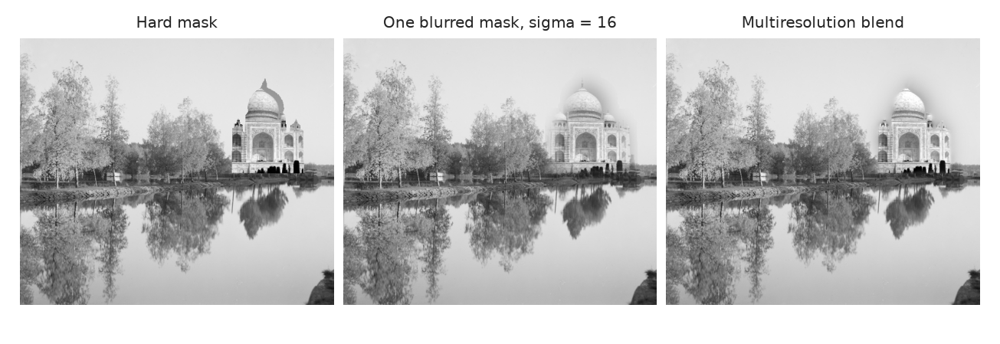
The multiresolution blend softens the pasted region's broad brightness mismatch and retains more architectural detail than the wide single-mask transition. A bright halo around the dome and a gray ring in the nearby sky remain visible because the two backgrounds have different brightness. The monument's perspective and illumination also differ from the lake, and the water contains no matching reflection. This is a useful example of the limits of blending: smoothing the transition cannot make an incompatible pair look fully natural.
Inside the custom blend
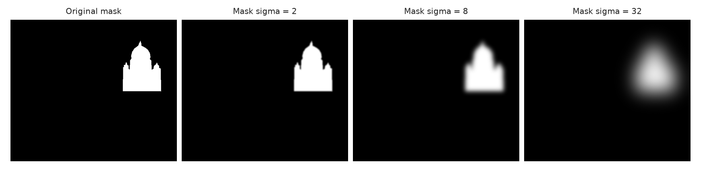
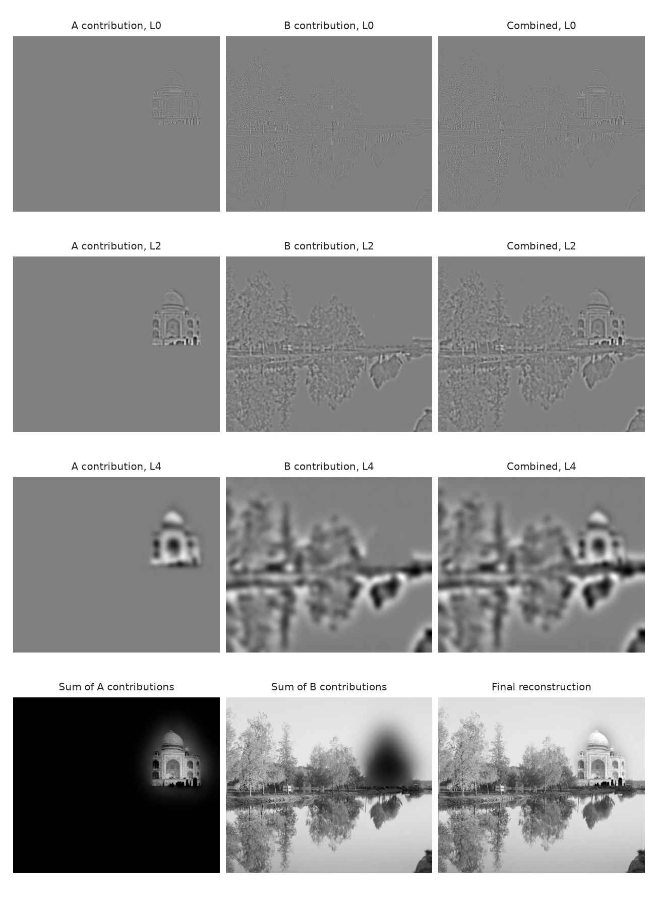
The left and middle columns show exactly what each source contributes at a given band. Fine edges are selected locally around the polygon; coarse brightness spreads over a wider region. The last row includes every level, not only the three bands illustrated above.
Numerical checks also cover limiting masks: an all-one mask reproduces A (error 3.33e-16), an all-zero mask reproduces B (error 2.78e-17), and identical inputs remain unchanged (error 1.39e-16).
What I learned
The most useful lesson was that filtering changes which information is visible, but it does not create information that the images do not contain. Smoothing makes edge maps easier to read while removing small structures. Sharpening strengthens surviving detail but cannot fully undo a blur. Hybrid images and blends work best when their source geometry agrees; adjusting a cutoff or widening a mask cannot fix every mismatch.
Writing convolution directly also made the boundary convention matter in a concrete way. Two filters that look equivalent on paper can disagree at the image boundary if an intermediate result is cropped too early. Keeping the full support until the final crop makes the derivative-of-Gaussian comparison agree to numerical precision.
Image and method credits
Cameraman, Taj Mahal, Derek, Nutmeg, apple and orange are the supplied course images. The two portraits and the building photograph are my Project 0 photographs. Emir and Saimaa Lake are my Project 1 reconstructions of Prokudin-Gorskii negatives from the Library of Congress; the Saimaa Lake record identifies the additional landscape.
The methods follow the Project 2 assignment. The two-point alignment follows the approach described in the supplied starter code, implemented here with recorded landmarks for reproducibility. The multiresolution mask weighting follows Burt and Adelson (1983); the twelve-panel layout follows the supplied Szeliski Figure 3.42.